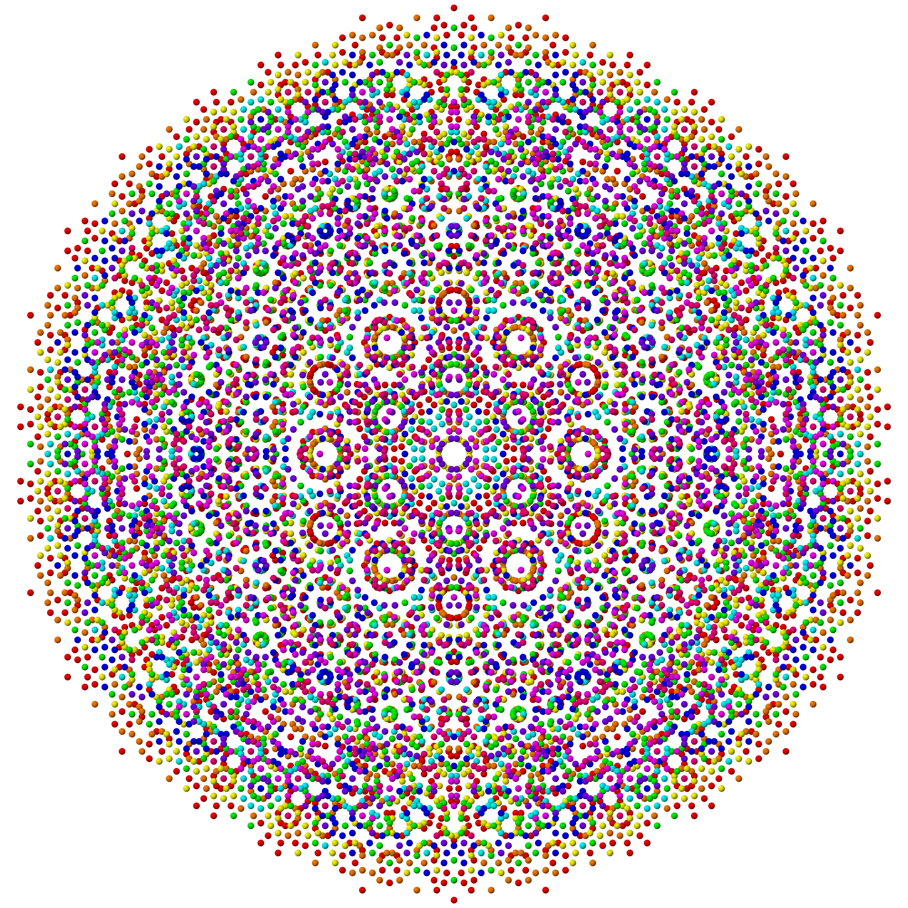

Semantic Space
In 2012, Berkeley scientists constructed the first map of how the brain organizes everything we see - Semantic Space
{kind=link}
Their 3D Semantic Space viewer averaged brain regions used by 5 scientists at the lab while watching a two hour movie. Gallant Lab - 3D Viewer
-----
No One Receiving
The movie was a documentary filmed on a coastal farm in North Carolina.
The narrator, Wilem turns over the metal book he'd received from Alex. His pudgy hands clasp a Dremel cutting tool and carefully began the work of removing the metal rings that had held the content in place for over 2,000 years, or at least that's how the story about its discovery in a small cave goes.
{kind=link}
Wilem had invested a large piece of the farm in purchasing the metal book now in his hands. The idea that he was now holding some of the first words written by Christ's disciples gave him pause. He'd developed a consuming focus after first learning about the discovery on the 500 Club. He'd dismissed much of the talk of the books being forgeries, enthralled by the idea that words or images from the years shortly after the life of Christ could be tightly secured between it's sealed covers.
When the local media caught wind, they ascended on his tranquil southern farm house like ticks on a hound dog. Three days later, an ad hoc security force kept the mob cordoned off at the entrance to his gravel road, and several boats commandeered by Wilem's cousins patrolled the islet of North Carolina's newest celebrity.
Wilem had hired a filmmaker to document the revealing. Their resume of Christian documentaries impressed him, but he was more enthused about having the show's pretty host onboard.
"I've been waiting for this day for five years," he beemed to her across from him. Silva smiled begrudgingly and passed him his tools. She was half there as an assistant, and half as a commentator. A good distraction for the viewers he thought, and more eye-catching than his chubby jowls and perspiring forehead.
Silva was his GoDaddy girl. She had narrated the program's original reporting on the book stash discovery five years ago, traveling to interview people from the town surrounding the cave.
"What in tarnation!" The book contained nothing at all, no words, no encryption, just a tiny piece of metal. Wafer thin, it fell to the table.
The surface of the contained a faintest of etchings, like tiny neural networks.
{kind=link}
The woman who had been recording my dream, turned to me and said, "brain regions are not exclusive to specific objects." I knew research from Berkeley Labs had shown that our brains rapidly reallocate resources based on behavioral demands.
"Each memory has a unique rhythm, frequency and amplitude. Your brain hums with entanglement. DNA makes an excellent storage device using twisting quantum polarities."
The science she is describing is also the basis for a new form of cinema we've been investigating using broadband genetic-sign radio waves. Developed in Russia, my search for the creator of the DNA-Wave Biocomputer projector took several years, and several wrong turns, before ending in success. Building on Peter P. Gariaev's prior work, Alex Larochenko had unraveled the information retrieval paradigm, creating a pure occipital-cortex stream in the process.
She switches on a screen and the field of white transforms into an arctic expanse.
The night is like a glove and he's floating like a dove
With his deep blue eyes in the deep blue sky
Here he comes the boy who tried to vanish to the future or the past
Is no longer alone among the dragonflies
- Brian Eno
Cave on the Edge - Coda's Tribe